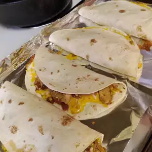

Chicken Quesadillas

Description
This chicken quesadilla recipe is great to make for parties. Zesty chicken, cooked peppers, and melted cheese are a delightful combination. Cut into wedges and serve with sour cream and salsa.
Ingredients
- 1 pound skinless, boneless chicken breast, diced
- 1 (1.27 ounce) packet fajita seasoning
- 1 tablespoon vegetable oil
- 2 green bell peppers, chopped
- 2 red bell peppers, chopped
- 1 onion, chopped
- 10 (10 inch) flour tortillas
- 1 (8 ounce) package shredded Cheddar cheese
- 1 (8 ounce) package shredded Monterey Jack cheese
- 1 tablespoon bacon bits